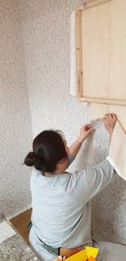

풀칠이 완료된 벽지를
바탕면에 부착하는 작업입니다.
벽지의 종류에는
한 겹으로 된 얇은 벽지의 단지,
속지와 겉지로 이루어져 저렴하고
시공이 쉬운 합지벽지(이중지),
종이 위에 플라스틱 비닐(PVC)재질
성분의 층을 가진 내구성이 강한 실크벽지,
천연소재로 만든 천연벽지,
전면에 그림이 들어가 있는 뮤럴벽지 등이 있으며
주로 합지벽지와 실크벽지가 사용됩니다.
또한 2가지의 벽지를 사용하는 도배 작업 시
겹침을 표시하기 위해
도배 용어 겹침선(미미선)을 사용합니다.